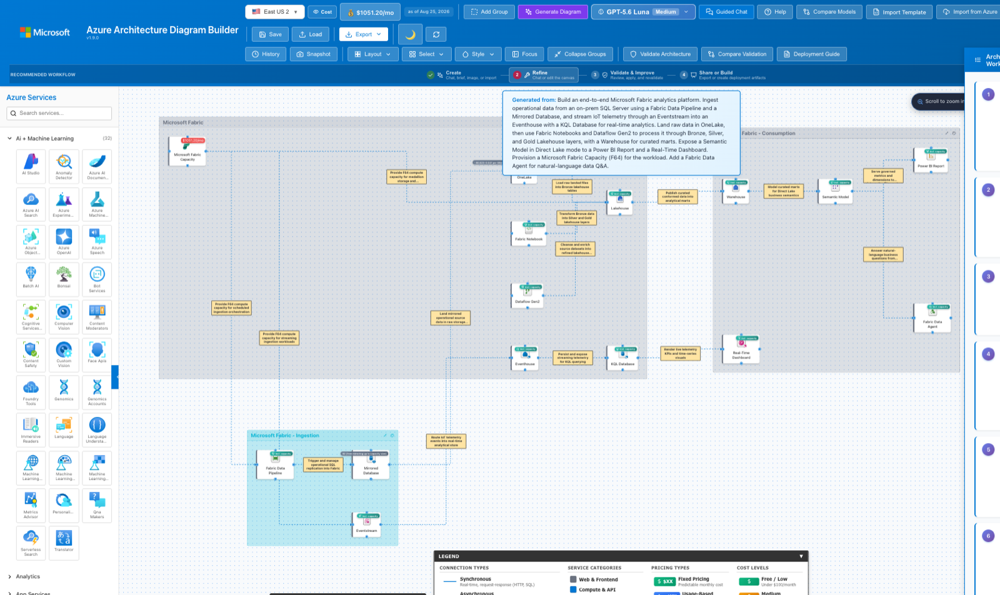
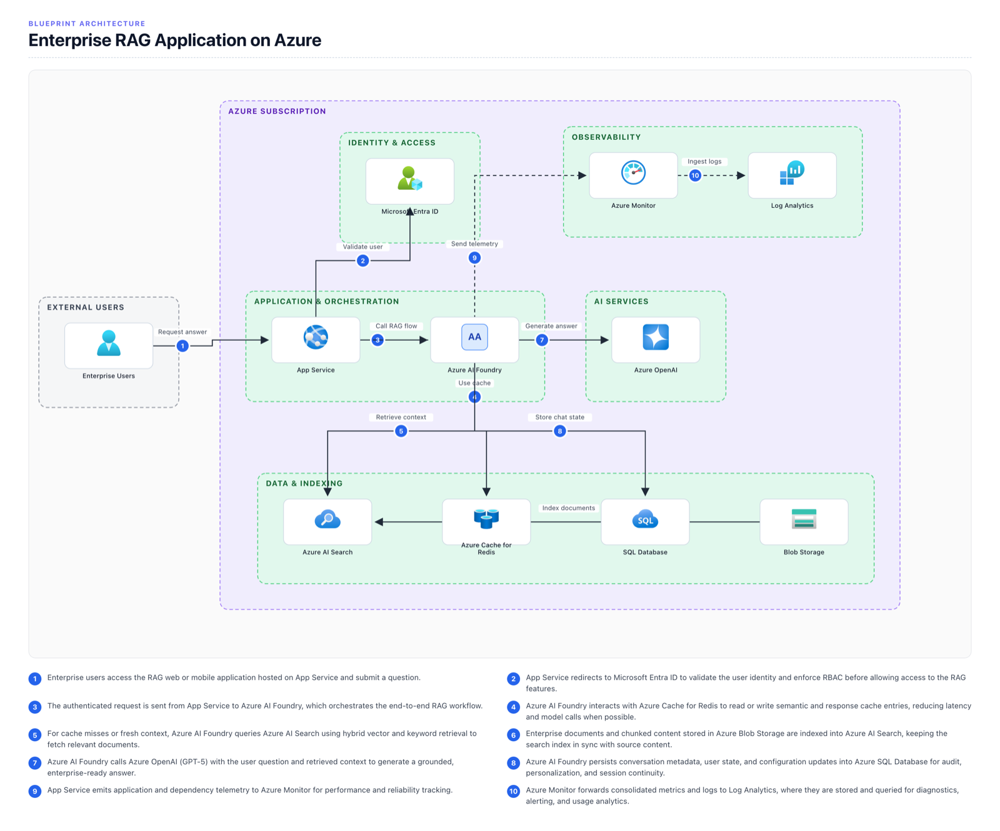
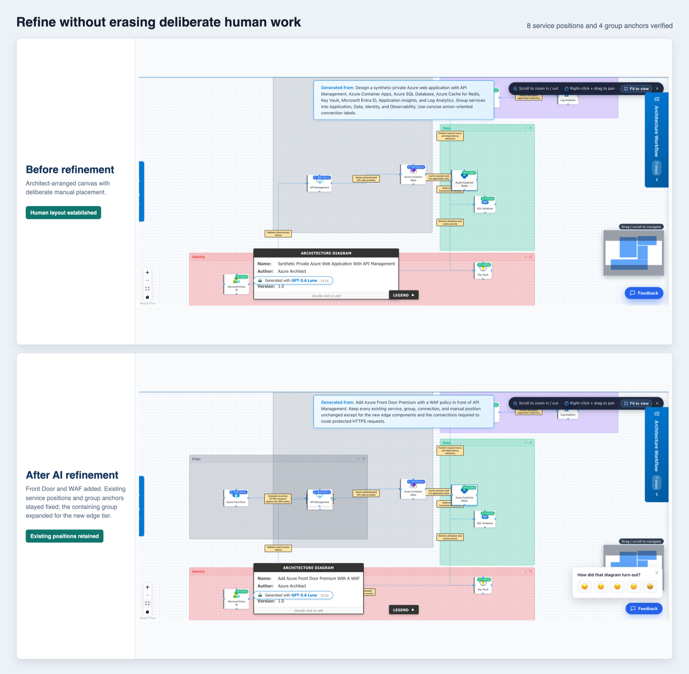

Describe a solution in a sentence. Get an editable architecture diagram with official Azure icons, real pricing from the Azure Retail Prices API, Well-Architected validation, and a deployment guide — in about a minute.

Architecture design sessions stall on the same three things: drawing the picture, agreeing what it costs, and proving it follows Microsoft guidance. This tool collapses all three into one canvas.
Every capability works on the same live canvas, so the diagram stays the single source of truth.
Describe the workload in plain English. Choose from 14 models across Azure OpenAI and Azure AI deployments — GPT-5.x, DeepSeek, Grok, Mistral, and Kimi — and get a grouped, labeled diagram.
"Add Front Door with a WAF policy." "Now make it zone-redundant." Each turn reads the live canvas, so follow-ups build on what you already have. Manual positioning is preserved.
Per-service monthly costs pulled from the Azure Retail Prices API, with a running total in the toolbar. Switch regions and the whole diagram reprices.
Scores the design across Security, Reliability, Performance, Cost, and Operational Excellence — then regenerates an improved architecture from the recommendations you select.
Distinguishes traffic flow from association and containment, so private endpoints, WAF policies, and VNet integration are modelled the way Azure actually works — not as fake network hops.
Generate a whiteboard-style blueprint PNG with nested zones and numbered flow arrows — the format people actually want in a deck or a design review.
Upload a screenshot, a whiteboard photo, or an ARM template and get back an editable diagram. Or pull live topology straight from an Azure subscription.
Run one prompt through several models side by side and compare service counts, WAF scores, latency, and token usage — then apply the winner to the canvas.
Ships with an MCP server, so Copilot and other agents can render diagrams, estimate costs, validate against WAF, and generate Bicep or Terraform directly.
Two things architects ask for most: a presentable picture, and refinement that doesn't destroy their layout.


Sketch and price a greenfield design live in a customer or partner workshop, instead of promising a diagram "by end of week".
Turn a discovery conversation into a costed, WAF-checked picture before the meeting ends.
Export a clean topology diagram or a blueprint PNG, plus a deployment guide with Bicep and ARM templates to hand to the implementation team.
Worth knowing before you use it in front of a customer.
Greenfield and Azure-only. The tool is built for sketching, validating, and costing new Azure solutions. It does not model other clouds.
WAF validation is a design-time signal. It assesses the diagram, not a deployed environment. It is not an audit, and it is not a substitute for review by a qualified architect before anything ships.
Cost figures are estimates. They come from the public Retail Prices API and exclude discounts, reservations, and negotiated agreements.